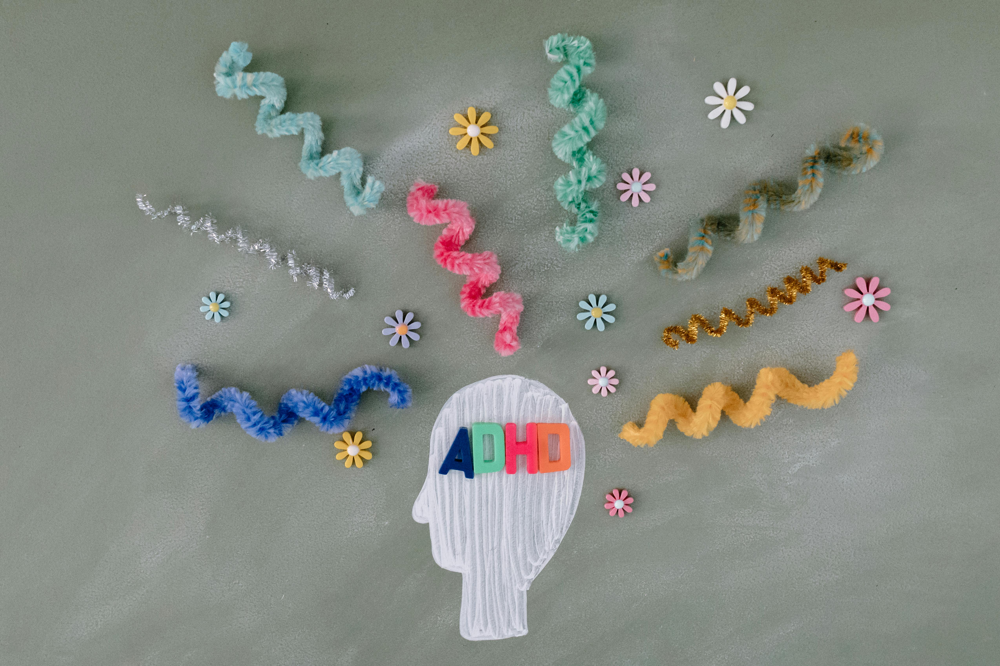

Anxiety Disorders
When worry becomes constant and feels like it's steering your day.
Learn more
When worry becomes constant and feels like it's steering your day.
Learn more
Intrusive thoughts and “must-do” rituals that crowd out daily life.
Learn moreMore than sadness: it affects energy, sleep, and motivation.
Learn more
Attention, impulse, and activity patterns that affect daily life.
Learn more
After trauma, reminders can feel like reliving it in the present.
Learn moreDistinct mood shifts that affect pace, energy, and judgment.
Learn more
Serious conditions affecting health, emotions, and relationships.
Learn more
If you or someone you know is in crisis, help is available now.
Learn moreWhen substance use and mental health challenges happen together.
Learn more
Anxiety Disorder is a mental health condition that can cause constant fear or worry about stressful situations.
Sometimes anxiety can be helpful by making people more alert in situations that feel dangerous.
GAD (Generalized Anxiety Disorder): Constant worry about everyday things, even when there’s no clear reason.
Agoraphobia: Fear of situations that feel hard to escape or overwhelming (like crowded places or wide open spaces).
Selective mutism: Anxiety that makes speaking feel impossible in certain situations.
Obsessive-Compulsive Disorder (OCD) is a mental health condition where a person experiences repeated, unwanted thoughts (obsessions) and feels driven to do certain actions or rituals (compulsions) to reduce anxiety or to feel “safe.”
Depression is a mental health condition that makes you feel empty, hopeless, or lose interest in things you normally enjoy.
Sources: National Institute of Mental Health (NIMH), Mayo Clinic, American Psychological Association (APA), Centers for Disease Control and Prevention (CDC), World Health Organization (WHO)
Attention-Deficit/Hyperactivity Disorder (ADHD) is a neurodevelopmental disorder that affects a person's ability to pay attention, control impulsive behaviors, and sometimes causes hyperactivity.
ADHD is primarily caused by genetic factors (it runs in families) and differences in how the brain develops and functions. Prenatal factors like maternal smoking or low birth weight may also increase risk.
Post-Traumatic Stress Disorder (PTSD) is a mental health condition that develops after experiencing or witnessing a traumatic event. It involves having persistent, distressing memories, avoiding reminders, and heightened stress responses.
PTSD can develop after experiencing combat, serious accidents, physical or sexual assault, witnessing violence, sudden death of a loved one, life-threatening illness, or other traumatic events.
Bipolar Disorder is a mental health condition marked by extreme shifts in mood, from very high (manic) states to very low (depressive) states.
Bipolar disorder is primarily caused by genetic factors (it runs in families), brain chemistry imbalances (neurotransmitters like serotonin and dopamine), and environmental stressors.
An Eating Disorder is a mental health condition that affects both physical and mental health. These conditions affect how people think about eating, weight, and shape. These symptoms can cause emotions and affect the ability to function. In some cases, long-term eating disorders can lead to death. The 3 types of mental health disorders are anorexia, bulimia, and binge eating disorder.
Anorexia is a life-threatening eating disorder. It is often characterized by extreme restriction of food and fear of gaining weight. People with anorexia often see themselves as overweight when, in fact, they are underweight.
Bulimia is a disorder categorized by repeated binge eating followed by attempts to lose that weight. These behaviors, called purging, can cause extensive vomiting and stress to the body. During a binge eating session, the person eats a lot of food in a short time, which then leads to shame and guilt. This guilt can later turn into purging behaviors. Unlike Anorexia, bulimia often happens to people between the average and overweight categories.
If you're concerned about a family member or friend, here are some things you should do:
Suicide is a mental health problem that touches both thought and emotion. It occurs when someone is crushed by pain, stress, or despair and sees no other escape. It strikes every age, background, plus circumstance. In most cases, support, attention, and professional treatment avert the act. Those who battle suicidal thoughts often feel caged, isolated, or certain that they weigh others down. Such feelings block the view of answers or the belief that life can improve. With suitable help, people discover safer ways to endure and regain hope.
The rise of substance use disorders has caused losses of billions of dollars in health care, as well as loss of life and productivity. Children are at a higher risk than ever of developing a substance use disorder. Despite treatment being effective, many families that need it do not receive it.
Drug addiction can begin with experimental use of a drug in social situations, which can later turn into a habit and then an addiction. For others, drug abuse starts with a highly addictive prescription drug that is misused and eventually leads to addiction.
The chance and risk of addiction varies between drugs. Opioid painkillers are often among the quickest substances to lead to addiction.
Over time, the same amount of a drug may no longer have the same effect. This often leads people to increase their intake, making addiction stronger and more difficult to stop. In some cases, withdrawal from certain drugs can be life-threatening.
Support from friends and family can play an important role in recovery by helping individuals overcome addiction and create a healthier, more supportive environment.
By clicking Sign in or Continue with Google you agree to You Matter's Terms of Use and Privacy Policy.